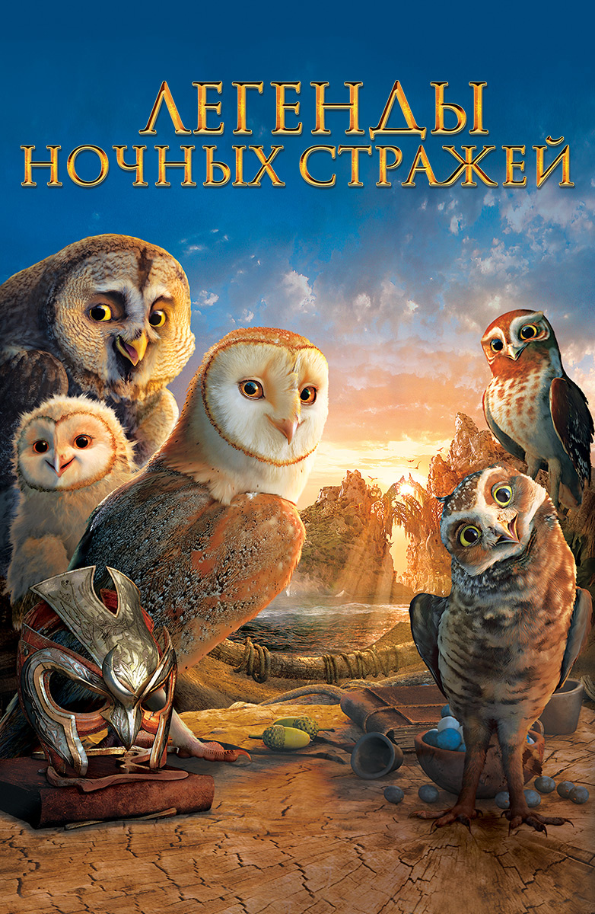

|  |
Легенды ночных стражейКэтрин ЛаскиЛесное царство Тито охвачено паникой: неизвестные похищают из гнезд едва вылупившихся птенцов. Жертвой злодеев становится совенок Сорен, который попадает в Сант-Эголиус, приют с суровыми порядками для осиротевших совят. Сорен понимает, что единственная возможность вырваться из этого воспитательного ада - научиться летать. Вместе с маленькой Гильфи они бегут из приюта и решают отыскать легендарное Великое Древо Га'Хуула, на котором обитают благородные и храбрые совы, чтобы вместе с ними сразиться с силами зла. По пути они знакомятся с Сумраком и Копушей, отныне их верными друзьями. Но и на острове Великого Древа четырех совят ждут большие испытания. Под руководством мудрого наставника Эзилриба им предстоит многому научиться, прежде чем стать Ночными стражами Га'Хуула. |